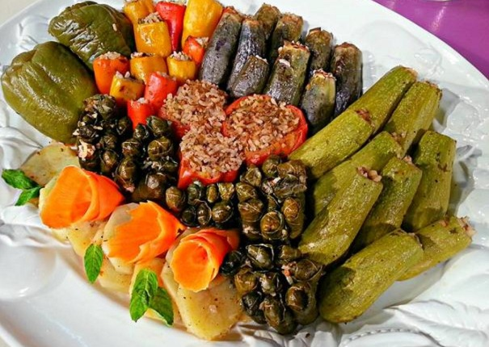
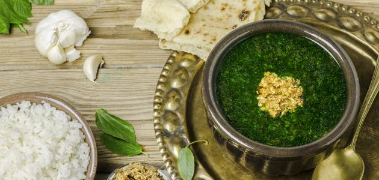

Step 1
Heat 1 tablespoon vegetable oil in a saucepan over medium-high heat. Stir in rice;
continue stirring until rice is coated with oil, about 3 minutes. Add 3 cups water
and 1 teaspoon of salt. Bring to a boil; reduce heat to low, cover, and simmer until
the rice is tender and liquid has been absorbed, 20 to 25 minutes.
Step 2
Fill a large pot with lightly salted water and bring to a rolling boil over high heat.
Stir in the macaroni, and return to a boil. Cook the macaroni uncovered, stirring
occasionally, until the it has cooked through, but is still firm to the bite, about
8 minutes. Drain well in a colander. Return macaroni to cooking pot, cover and
keep warm.
Step 3
Soak lentils for 30 minutes. Drain and rinse; drain again. Bring 2 cups water to
boil in a pot and stir in lentils. Bring to a boil; cover and reduce heat to low.
Simmer until lentils are tender 15 or 20 minutes. Stir in 1/2 teaspoon salt.
Step 4
Heat 1 tablespoon vegetable oil in a large skillet over medium-high heat. Cook the
onions in the oil, stirring often, until they begin to brown, 10 to 15 minutes.
Onions should be a nice caramelized brown color. Add garlic and cook another minute.
Remove from pan, drain on a paper towel-lined plate.
Step 5
Place half of the onion mixture into a saucepan. Mix in the vinegar. Add the chopped
tomatoes and tomato paste, black pepper, 2 1/2 teaspoons salt, cumin, and cayenne (if using).
Bring to a boil then reduce heat to medium-low and simmer about 12 minutes.
Step 6
Serve by placing a spoonful of rice, then macaroni, and then the lentils on serving plates.
Sprinkle with some of the browned onions, then top with tomato sauce.

Mahshi
Step 1
Heat oil in a medium saucepan over medium heat. Saute onions until tender. Stir in rice
and hot water to cover. Cover and simmer until rice is half cooked, about 10 minutes.
Step 2
Remove from heat and stir in tomato paste, currants, pine nuts, cinnamon, mint leaves,
dill weed, allspice and cumin. Let mixture cool.
Step 3
Prepare a large pot by placing an inverted plate on the bottom; this protects the dolmas from
direct heat when steaming.
Step 4
Rinse grape leaves in warm water; drain and cut off any stems. Place about 1 teaspoon
of the cooled rice mixture in the center of a leaf. Fold in the sides and then roll
into a cigar shape. Place in prepared pot. Repeat with remaining ingredients.
Step 5
Pour in just enough warm water to reach the bottom of the first layer of dolmas.
Cover and simmer over low heat for 30 to 45 minutes, or until rice is totally cooked.
Check the water level often and add more as necessary.

Molokhia
Step 1
Bring 4 cups of broth to a boil.
Step 2
Open up your packages of Molokhia leaves as soon as your broth is about to boil.
Do not thaw the leaves ahead of time. That “X” shape isn’t anything special.
It’s just how my mother used to open the package quickly with a knife and it’s fun,
so I do it too.
Step 3
Carefully drop each package of frozen molokhia into the boiling broth.
Step 4
Bring the broth back up to a mild boil and then just let it simmer. You do not want
to boil this soup very hard. A low simmer is perfect.
Step 5
Stir the molokhia every once in a while to really get the molokhia melted
(only about 15-20 minutes).
Step 6
As soon as the molokhia is all melted, let the pot simmer (not boil) for about
5 minutes and then turn off the heat.
Step 7
In a small saute pan, heat up a tablespoon of vegetable or olive oil on medium heat
then add in 6 crushed cloves of garlic (8 if you really like it garlicky) and saute
while stirring frequently until golden brown. Be careful not to burn the garlic!
At this point add in the pinch of crushed black pepper to the garlic and saute
together.
Step 8
Once the garlic is ready, bring the pan over the pot with the Molokhia in it and
then ladle some of the Molokhia over the garlic. If you get a satisfying sizzle
noise then you’re doing it right.
Step 9
Repeat this step so that all of the garlic in the pan is now in the pot.
I’m not sure why this is done except that this is how it is done at my house.
It’s an easy way to get the garlic out of the pan and mix the soup at the
same time.